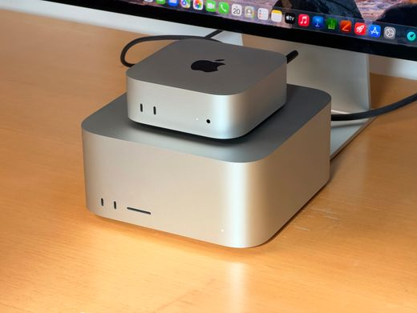

The problem that made me look beyond my everyday computer

Lately, I have been running into a very familiar problem with my everyday computer. My work rarely involves just one application at a time. I might have VS Code open with a Python project, several browser tabs full of documentation and papers, a Jupyter notebook running an analysis, Docker containers in the background, and perhaps a local database or machine-learning experiment running alongside everything else. Add a reasonably large biological dataset to that mix and suddenly the fan gets louder, memory starts disappearing, applications become less responsive, and I find myself thinking less about the scientific question and more about whether my computer can keep up.
Anyone working in computational biology probably knows some version of this experience. Modern scientific research has quietly become incredibly computational. We analyse thousands or millions of cells, integrate transcriptomics and proteomics, process microscopy images, train predictive models, search enormous databases and increasingly experiment with generative AI. Of course, we have HPC clusters and cloud platforms for the really large jobs. But there is an awkward space between “my laptop can handle this” and “this deserves a cloud cluster.” That middle ground is where I became interested in Apple's new Mac mini M6.
What exactly is the Mac mini M6?
The Mac mini itself is a wonderfully simple idea: take away the laptop screen, keyboard, trackpad and battery and concentrate on the computer. The result is a tiny desktop machine that you connect to your own monitor and peripherals. The new version contains Apple's M6 chip, with a 12-core CPU, 12-core GPU, dedicated AI hardware and up to 32 GB of unified memory. Apple also reports memory bandwidth of up to 170 GB/s. Those numbers sound impressive, but specifications aren't particularly useful unless we translate them into something tangible.
I like to imagine the computer as a small research laboratory. The CPU is a group of experienced scientists capable of handling complicated general tasks. The GPU is a much larger team of research assistants that excels when thousands of similar calculations need to happen simultaneously. The Neural Engine and Neural Accelerators are specialists brought in specifically for certain machine-learning jobs. And unified memory is their shared laboratory bench: instead of constantly carrying material between separate rooms, different parts of the chip can work from the same pool of memory.
That architecture becomes particularly interesting for computational biology and AI. A typical research workflow might involve Python or R, Scanpy, pandas, PyTorch, Docker, Nextflow, databases and visualization tools. Increasingly, we might add local language models, embeddings, vector databases and RAG systems to that list.
A Mac mini is not going to turn a nine-million-cell single-cell experiment into a trivial computation, but a surprisingly large amount of development, exploratory analysis and machine-learning prototyping can happen locally before the truly heavy work needs to move elsewhere.
Local computing vs cloud computing
This raises a bigger question: if we already have cloud computing, why invest in powerful local hardware at all?
For me, cloud computing is a little like renting an enormous laboratory whenever an experiment requires it. If tomorrow I need hundreds of CPU cores, huge amounts of RAM or several powerful GPUs, I can rent that infrastructure, run the experiment and shut it down when I'm finished. It is extraordinarily powerful and flexible. But I wouldn't want to rent a laboratory every time I wanted to inspect a sample. A capable local computer is the laboratory bench that is always beside you. I can change a few lines of code, run something, inspect the result, modify it and run it again without starting a cloud instance or thinking about hourly compute costs. The cloud remains invaluable for scale; local computing is wonderful for iteration. Increasingly, I think the sensible scientific workflow isn't local versus cloud at all. It is local + cloud + HPC, with each doing what it does best.
What does this mean for data scientists dealing with big biological data for individual projects?
This is where the Mac mini becomes more interesting to me than an ordinary hardware upgrade. For computational biologists, much of our everyday work doesn't necessarily require a massive cluster. Data cleaning, exploratory single-cell analysis, visualization, pipeline development, statistical analysis, database work, testing algorithms and building reproducible workflows can often happen locally. The same applies to computational drug discovery. A scientist may move between omics datasets, molecular information, predictive models, literature, databases and experimental results throughout the day. Having enough local compute to explore those data quickly can shorten the distance between an idea and actually testing it.
Then there is AI.
Imagine a local research assistant connected to your papers, experimental documentation and analysis outputs through a RAG system. Or a small language model helping interrogate scientific documents while a vector database and Python backend run locally in Docker. Some exploratory ML inference and model development can happen on the same machine on which the scientist writes code. Keeping computation local can also reduce unnecessary movement of data, although that should never be confused with automatic GDPR, clinical or institutional compliance.
For me, this is where the idea becomes compelling: the computer stops being simply the place where I access computational resources and starts becoming a meaningful computational resource itself.
Local AI may be the bigger story
Much of our current experience with AI looks something like this: we type something into an application, our request travels across the internet, an enormous model processes it somewhere inside a data center, and the answer comes back.
Increasingly, another possibility exists: the model itself can run locally.
Apple is designing its hardware around this direction. The M6 combines GPU-based Neural Accelerators with a dedicated Neural Engine, making it possible to accelerate certain machine-learning workloads directly on the device. That opens an interesting future for scientific computing. Instead of sending every request to an external LLM API, researchers could potentially run smaller models locally for document search, coding assistance, embeddings, classification, information extraction or specialized scientific workflows. It doesn't eliminate cloud AI. The largest frontier models will still require extraordinary infrastructure. But it creates another layer between traditional local software and enormous cloud models. And that layer could become very useful for scientists.
The reality check: memory, storage and CUDA
There are compromises, and the biggest one for me is memory. The M6 Mac mini starts with 16 GB of unified memory and tops out at 32 GB. For ordinary computing, 16 GB may be perfectly adequate. For the future Apple itself is describing-local AI, agents and demanding computational workflows- I find it less convincing. VS Code, a browser, Docker containers, Python, a biological dataset and a local model can become very hungry roommates surprisingly quickly.
If I were configuring one specifically for computational science, I would consider 24 GB the practical starting point and personally lean toward 32 GB. Memory matters because it cannot simply be upgraded later. Storage presents a similar issue. The entry configuration begins at 256 GB, and biological data has an extraordinary talent for making 256 GB feel tiny. Sequencing data, microscopy images, model weights, Docker images and computational environments accumulate quickly. Fortunately, external high-speed storage is much easier to add later than unified memory.
There is another important limitation for machine-learning researchers: this is not an NVIDIA CUDA workstation. Apple has its own GPU-computing ecosystem through Metal, and frameworks such as PyTorch can use Apple's GPU through its MPS backend. That is useful for development and many ML workloads, but a research pipeline specifically dependent on CUDA, NVIDIA libraries, large-scale GPU training or multiple GPUs still belongs on appropriate NVIDIA infrastructure. A Mac mini should complement that environment, not pretend to replace it.
The price: is it worth the investment?
In Germany, the M6 Mac mini starts at around €1,049 (local Media Markt price), with eligible education pricing starting lower. That initially sounds attractive considering how much computing fits inside such a small machine. But the base price isn't necessarily the price of the machine I would actually want for scientific work. Once memory and storage are upgraded, the investment becomes more substantial. My priority would therefore be simple: buy memory first. External storage can always be added later; unified memory cannot. Whether that investment makes sense depends heavily on how the machine will actually be used. Someone who primarily browses the web, writes documents and occasionally runs Python probably doesn't need to buy a computer specifically for this level of performance. But someone spending hours every day moving between code, data, Docker, computational pipelines, ML experiments and scientific applications may experience the value very differently.
What I like and what gives me pause
What attracts me most is the combination of size and capability. It is small, quiet and designed to stay on a desk, yet it can become a serious Python/R development environment, Docker host, data-analysis workstation and local AI playground. Unified memory is particularly interesting for AI, and the possibility of running meaningful computational workflows without constantly reaching for cloud resources is appealing.
The limitations are equally important. The 16 GB entry configuration feels conservative for a machine increasingly marketed around AI. The 32 GB ceiling restricts the size of workloads that can realistically remain local. Storage upgrades are expensive. And the absence of NVIDIA/CUDA means it cannot replace the GPU infrastructure on which much of modern scientific machine learning still depends.
Perhaps the biggest danger is simply misunderstanding what the machine is.
It is not a miniature HPC cluster.
It is not a replacement for the cloud.
And it is definitely not a tiny box capable of training the next frontier AI model underneath my desk.
So, would I actually buy one?
For the right kind of computational scientist, yes- but I would not buy the base configuration. If my everyday work involved computational biology, scientific software engineering, Python and R, moderate omics datasets, Docker, local databases, RAG applications, machine-learning prototyping and experimenting with local AI, a 24 GB or preferably 32 GB M6 Mac mini would make a compelling everyday workstation.
If my primary goal were training large deep-learning models, processing enormous single-cell atlases entirely in memory, running massive molecular simulations or developing CUDA-dependent algorithms, I would rather invest in-or maintain access to- proper GPU and HPC infrastructure.
And perhaps that's the most important takeaway.
For years, computing seemed to be moving in one direction: away from our desks and into enormous data centers. Scientific computing followed the same path, and AI accelerated it dramatically. Now, something interesting is happening in the opposite direction. Better chips, unified memory and specialized AI hardware are bringing meaningful computational capability back onto our desks. The future scientific workstation therefore may not be a choice between personal computer or cloud. It may be a hybrid system: a capable little machine beside the scientist handling everyday coding, exploration, analysis and AI locally, connected to essentially unlimited cloud or HPC infrastructure whenever the scientific question demands more.
And that is why I find the Mac mini M6 interesting. Not because it is simply a faster computer. But because it hints at a future where a surprisingly capable personal computational laboratory might fit on the corner of a scientist's desk.
References
- Apple. Mac mini technical specifications.
- Apple Germany. Mac pricing.
- PyTorch. MPS backend documentation.
Sources accessed September 26, 2026.